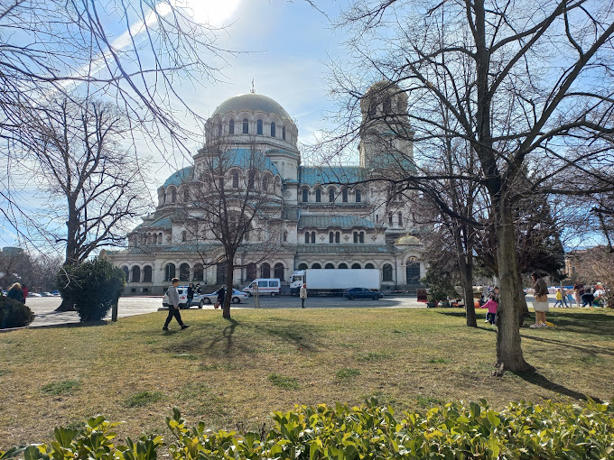

Sofia.

Sofia’s metro network is relatively new and it’s locals’ favorite way to get around. There are 2 functioning metro lines. A 3rd one is currently being built. The city’s key points (such as the Sofia Airport, Sofia Central Railway and Bus Stations, and historical center) are all well connected with the metro. If you are planning on using the metro, make sure to read our Guide to Sofia metro
Taxis are very affordable in Bulgaria. A ride from the Sofia airport to the center should be around 20 BGN (10 EUR). Anywhere within the city – around 15 BGN (8 EUR). However, you should be careful as there are a lot of scammers. More about taxis in Sofia.
You can reach Sofia airport from all over Europe.